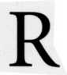

Chart 13: "Whether man or wife shall die first?" February 16, 1645, 9:22 P.M. GMT, 00W10, 51 N30 Regiomontanus Houses
 adix is a word from the Latin, meaning root. Something is radical when it is basic, fundamental, and goes to the root of the issue. For obvious reasons, the astrologer must work with a radical chart to make accurate interpretations. In natal astrology, one can tell if a chart is radical by judging it against the personality and life of the native. In horary astrology, one measures radicality by the fit of the chart to the querent and the situation.
How can one tell if the horary chart is radical? Horary texts are replete with rules about how to make this judgment. There are so many rules, in fact, that the novice may fail to see the forest for the trees. The bottom line is that a chart is radical if and only if it fits the querent and the question at hand. The chart must describe the situation and tell the story.
A chart is never radical if you erect it for the wrong time and place. A quick way to gauge timing is to check the position of the Sun, which acts like an hour hand in the horoscope wheel. The Sun is at the Ascendant at Sunrise, at the MC at noon, at the Descendant at Sunset, and at the IC at midnight. A glance at the position of the Sun will tell you the time of day, which should match the time of the question.
To get a global sense of whether the chart fits the question, I look at the positions of the Sun, Moon, and Mercury. The Sun and the Moon are the major lights in the sky and symbolize those aspects of the chart that are most visible or apparent. The house and sign positions of the lights should have some obvious bearing on the question. The same holds true, to a lesser extent, of the houses ruled by the lights, that is, the houses with Leo or Cancer on the cusp. Finally, Mercury is the natural ruler of questions, and his position in the chart should reflect something about the matter. If these conditions hold true, you know you are getting warm and the chart is probably radical. Sara's question in Charts 2A and 2B illustrates how to use these global indicators to analyze the chart.
Once you have a general sense of the chart, consider the Ascendant and the planets signifying the querent to see whether their natures match those of the querent and the situation. The 1st house refers to the conditions surrounding the question and represents the person making the inquiry. The 1st house ruler and Almuten, the sign on its cusp, and any planets in the 1st describe the querent. The Moon is always a co-ruler of the querent and of the situation prompting the horary question. According to Bonatus, the planet from which the Moon most recently separated by aspect also co-rules the querent. Lilly tried this rule of Bonatus but found it did not work in his charts.
Benefics in the 1st house support a favorable answer if other factors in the chart concur. Jupiter and Venus are respectively the greater and lesser benefic planets. The Moon's North Node and the Part of Fortune are benefic points. When any of these fortunate planets or points are rising, good things are coming and the querent is in a positive frame of mind. The Moon's North Node in the 1st is favorable and implies that a lost item will be found (Lilly, CA, p. 468). Venus ascending brings favor and the finer things in life. Jupiter rising is fortunate and protects the querent regardless of the outcome of the question. I used this principle in Chart 2A to tell Sara she had come into good fortune.
Bonatus included the Sun and the Moon among the benefics. A rising Sun suggests that a matter of importance or some honor in store for the querent. Because the Moon rules change, Luna in the 1st house denotes fluctuations, uncertainty, and insecurity in the matter. The Moon rules the public, and some publicity may accompany the outcome. Mercury rules trivia, and a first house Mercury suggests a trivial matter that may involve documents, writing, or short trips.
Malefics in the l st house support an unfavorable answer to the question if the rest of the chart supports a "no." Mars and Saturn are the traditional malefic planets, and the Moon's South Node is a malefic point. When a woman asked Lilly if she would ever have children, the Moon's North Node in the 1st house (physical body) was evidence of her inability to conceive (CA, p. 239). Retrograde Saturn in theist house is particularly nasty and will mess up matters unless major positive factors intervene. According to Lilly, "If Saturn be in the Ascendant, especially retrograde, the matter of that question seldom or never comes to good." In an otherwise favorable chart, retrograde Saturn in the 1st will damage but not destroy the final outcome. Some modern astrologers include the outer planets Uranus, Neptune, and Pluto among the malefics. Since by temperament I usually expect the worst, I am among those who accept five malefic planets. Mars and Saturn are evil on a personal level, and the outer planets refer to forces beyond personal control.
Mars, the god of war, in the lst house indicates strife or conflict for the querent. Saturn rising implies the question is a matter of serious concern and brings delays and limitations. With Saturn in the 1st, the querent may be depressed, worried, fearful, or in ill health. Uranus in the first suggests an anxious or agitated querent and brings the unexpected and unpredictable. With Uranus prominent, conditions are unstable and disruptions or separations occur. A 1st house Neptune shows a querent who is vague, confused, self-deceived, unrealistic, or close to tears. Pluto in the first signifies complications and profound changes over which the querent has little control.
Having looked at the Ascendant and the 1st house, next look for any of the classical considerations before judgment. Modern astrologers refer to these considerations as "strictures" because the older texts warn that the chart may not be "fit to be judged" when they are present. A stricture, however, does not automatically mean a non-radical chart. Strictures are of the nature of Saturn and often warn the astrologer to be discreet in answering the question. A stricture may describe the situation and confirm a reliable chart. Occasionally strictures signify that the querent did not ask the question he or she really intended, or somehow misrepresented the information. For example, a criminal might ask, "Will I be able to go abroad next week?" when he really wants to know if the police will catch him. In this case a stricture cautions the astrologer about the trick question.
THE CLASSICAL CONSIDERATIONS BEFORE JUDGMENT
The history of astrology refers to many considerations before judgment, but traditional horary astrologers have paid special attention to four of them. When present, these considerations may imply it is not the proper moment to do an astrological analysis of the question. As Appleby puts it, "This form of divination is self-regulating."
Anyone familiar with psychological testing will be at home with the idea of considerations before judgment. For example, the Minnesota Multiphasic Personality Inventory (MMPI) is a true-false questionnaire designed to measure personality variables. It asks questions such as "I like mechanics magazines" or "I believe I am being plotted against." The questions are grouped into different scales that measure personality variables such as depression, anxiety, paranoia, and so on. In addition, the MMPI has "validity" scales to tell the psychologist whether the subject is lying or being too defensive. These validity scales tell whether the other test results reliably describe the person who took the test. Considerations before judgment in astrology are like the validity scales on the MMPI. They can tell us whether the chart fits the situation or is the result of improper timing or an insincere effort on the part of the client.
The idea of strictures grew out of the experience of astrologers. In the mid-1200s Guido Bonatus, whose writings Lilly carefully studied, had a flourishing practice of horary and electional astrology. Bonatus restricted his horary practice to "matters of honest importance," and refused to answer questions based on "trifling occasions, or light sudden emotions, much less on matters base or unlawful." He noticed that clients sometimes came to "tempt or ensnare" him, or to "put a trick on him." It was as if they had said to themselves, "Let us go to such an astrologer and see if he can tell us the truth or not." Sometimes the querent might "on a sudden think of something, and so ask, as it were, by-the-bye; wherein it is a thousand to one but mistakes happen" in interpreting the horary chart.
Guido asked himself, "How shall I know whether the querent came out of a solid intention, or only to try me?" To answer this question, he studied the charts of those who were trying to ensnare him, and in doing so, he discovered the idea of the non-radical Ascendant. Bonatus reported that "if the Ascendant then happened very near the end of one sign and the beginning of another, so that it seemed as between both, I said they did not ask seriously, or that they came to try me; and I have had many thereupon confessed what I said to be true and began to think that I knew more than before they believed."
Bonatus did not specify what he meant by the Ascendant being "very near the end of one sign and the beginning of another." He used his judgment and experience to decide. By Lilly's time astrologers had specified the non-radical Ascendant to be between 27 degrees of one sign and three degrees of the next. This area of non-radicality spans six degreessix out of thirty-which means that one in five charts will have a non-radical Ascendant.
I can only guess that this specificity came about because some anxious student pestered the teacher for a definitive rule to avoid thinking about the chart. Can't you imagine a student asking, "What about 26°59'59"? Is that a radical Ascendant?" Bonatus never intended it as a rule, only as a guideline, to help detect impostors. In the spirit of Bonatus, I view the horary strictures as guidelines and not absolutes. The following example shows a stricture that is not a stricture.
Chart 10 is for the question, "Will Mayor Ed Koch win the primary tomorrow in New York City?" On September 11, 1989, which was Monday, a Moon day, I was listening to the radio on the way to work. The newscaster reported that it was the beginning of the countdown for the Democratic primary race between Ed Koch and David Dinkins. The race was too close to call. I noted the time to be 7:34 A.M. EDT. When I got home that evening, I put up the chart on the computer and told my wife that the incumbent mayor Koch was going to lose.
The most striking feature of the chart is the "non-radical" Ascendant with zero degrees rising. How non-radical can you get? Bonatus is on target because I did "on a sudden think of something, and so ask, as it were, by-the-bye." But simply because I asked "by-the-bye," am I not allowed to read the chart? I was sincere in asking the question. Shouldn't the chart contain a valid answer?
Chart 10 "Will Ed Koch win the primary? September 11, 1989, 7:34 A.M. EDT, 73W01, 41 N19 Koch Houses
Bonatus does not mention it, but I have found that a non-radical Ascendant often means the matter is none of the querent's business. In this case, it is none of my concern whether Koch or Dinkins wins the primary. I am simply curious and have no direct involvement or responsibility in the matter. Perhaps the non-radical Ascendant is nature's way of telling me to mind my own business-"it's not nice to fool with mother nature."
Marc Edmund Jones taught that the chart will contain a reliable answer if the consideration before judgment describes some fundamental aspect of the situation. Here 0° Libra rising fits exactly the beginning of the countdown in a race that is evenly balanced (Libra) and too close to call. For the astrologer who uses his or her brain rather than rote memorization, the chart is radical after all.
In addition, the Ascendant describes the state of the querent-me in this case. Zero degrees rising fits my state of mind, exactly as Bonatus described it. I had heard the news broadcast and "on a sudden" thought of asking the horary question a split second later. The matter had no time to gestate in my mind. In other words, 0° ascending concords with my question, which came suddenly into existence and had no time to develop before I popped the horary question. That is a radical Ascendant!
In the first edition of this text, I followed the method of Joan McEvers and assigned Aries on the 7th house cusp and Mars to Mayor Koch. According to March and McEvers (Vol. IV, p. 5, 1994): "If the question pertains to another person, especially by name, that individual is represented by the 7th house." Libra on the 1st cusp and Venus are the significators of his opponent Dinkins. I assumed that whichever significator was stronger would show who would win the primary. Mars (Mayor Koch) is weak because he is cadent (the 12th house is Koch's 6th house), combust (within 8 1/2 degrees of the Sun), and in the same degree as the Moon's Mean Nodes. Planets in nodal degree suggest a fatality or crisis in the matter. Koch will probably lose the primary. Venus (Dinkins) is strong because she is angular (1st house) and dignified in her own sign, Libra. Dinkins is stronger than Koch and will probably win. Cardinal angles imply a quick resolution, and it was a given that we would know the outcome within twenty-four hours.
Since writing the first edition of this text, I have become more interested in traditional methods and would now read this chart in a more classical manner. The person in power is shown by the 10th house of sovereigns. Since Cancer rules the 10th and Jupiter lies therein, both the Moon and Jupiter represent Mayor Koch. His opponent occupies the opposite 4th house with its Capricorn cusp and with Uranus, Saturn, Neptune, and the Moon within. Dinkins' primary significator is Saturn since the Moon already rules Koch and the outer planets are not used as primary significators in traditional horary.
If the Moon represents Koch, it is of little help because the Moon in this chart has no essential dignity (is peregrine). The Moon is also in Capricorn, the sign of its detriment. Since Capricorn rules Dinkins' cusp, Koch is at the mercy of Dinkins. The Moon's final aspect is a square to Venus, which rules the radical 1st house, which is the end-of-the-matter 4th house of Koch. This Moon/Venus square suggests defeat.
If Jupiter represents Koch, it is a close race. Jupiter is strong in Cancer where it is exalted and in the angular 10th house. In fact, according to Lilly's point system, Jupiter is the strongest planet in this chart. Saturn, however, is also strong, lying in Capricorn which it rules and in the angular 4th house. Saturn is the dispositor of the Part of Fortune and forms a favorable semi-sextile with Pars Fortuna. Of special importance is the fact that Saturn is stationary direct, and Saturn has made its station almost exactly opposite Jupiter. Stationary planets are extremely powerful, especially when they are turning direct, and this fact probably gives Dinkins the edge. Jupiter (Koch) is in partile opposition (within 17' of exact) to the greater malefic Saturn and is applying to an opposition of Neptune, the modern planet of dissolution. On Tuesday, September 12, 1989, Dinkins won the primary.
THE FIRST CONSIDERATION: A NON-RADICAL ASCENDANT
Having shown that a non-radical Ascendant is not always non-radical, I will now present the party line on the non-radical Ascendant. The basic principle according to Jones is this: "If the Ascendant of a chart lies in the first or last three degrees of a zodiacal sign, the matter at issue is taken as not centered thoroughly enough in one given area of experience to afford a reliable judgment." In other words, more than twenty-seven degrees of one sign and less than three degrees of the next rising is an "index to the proper maturity of the inquiry." In the interest of clarity, I will break the non-radical Ascendant into two parts as follows.
Less Than Three Degrees Rising
Traditionally less than three degrees of a sign on the Ascendant means the question is premature and cannot be answered with certainty. According to Zain, "the question is undergoing gestation and in not completely formed." The querent may need more information, or matters may not have progressed enough to determine the outcome. Further developments may make the inquiry irrelevant. If new information fundamentally changes the situation, the querent may ask a second time. Another possibility is that a more basic question is on the querent's mind, and careful interviewing of the querent will reveal a deeper issue worthy of horary analysis. Finally, for the paranoid among us, the querent may be trying to trick or ensnare us with the inquiry.
According to Jones, zero to three degrees rising signifies a "premature matter, or something as yet without definite form." Jones continues that sometimes the non-radical Ascendant "will prove to be an accurate description of the issue or situation which is the basis of the inquiry." For example, the first three degrees may signify concern over "some spontaneous notion" or "an enterprise just about to be launched." In Chart 10 my question was a spontaneous notion about the Democratic primary, an enterprise about to be launched the following day.
More than Twenty-Seven Degrees Rising
If more than twenty-seven degrees of a sign rise on the Ascendant, the question may be obsolete or out of date. Matters may have gone too far for the querent to affect the outcome. The inquirer may be too late in asking because the matter has already been decided, and there may be nothing the querent can do about it. According to Zain, "The question as formulated has been outgrown by new conditions, and these as yet have not been fully grasped by the unconscious mind." Jones says the last three degrees ascending suggest a "proposition long neglected, or a potentiality which has thinned out and so lost its vitality." On the other hand, Jones feels this stricture can accurately describe "some long-delayed or drawn-out affair, or a matter long under consideration." If so, the chart is radical.
With late degrees rising, the querent may have already asked everyone under the Sun and may finally be asking the astrologer simply to confirm a course of action already undertaken. For example, a young woman might ask if she should marry her boyfriend after they have been secretly wed. Sometimes the querent is late in asking the question because he or she has consulted another astrologer or advisor and been disappointed with the results. Late degrees may also denote an insincere client who is trying to trick the astrologer.
Note that Jacobson regards twenty-nine degrees of any sign as a critical degree or crisis point showing impatience to move into the next sign or a new area of experience. According to Jacobson, a significator at twenty-nine degrees is "at the end of his rope or patience: discouraged." In addition, as Dorotheus pointed out, the malefic planets Mars and Saturn rule the terms at the ends of signs and render the final degrees unfortunate.
Lilly reported several exceptions to the rule of the non-radical Ascendant. He said if the first or second degrees of a sign ascend, you could still judge the chart if "the querent be very young, and his corporature, complexion, and moles or scars on his body, agree with the quality of the signs ascending." If twenty-seven or more degrees rise, "It is not safe to give judgment, except the querent be in years corresponding to the number of degrees ascending, or unless the figure be set upon a time certain, viz. any event happening, such as a man went away or fled at such a time precisely; here you may judge, because it is no propounded question."
Lilly had a fascination with the moles and scars on people's bodies and used them to impress his clients and to judge whether a chart was radical. He gave a detailed description of all the marks on his own body in discussing the house of Mr. B and seemed to enjoy telling his clients about the most intimate parts of their anatomy according to the stars. Who knows how far he went with this line of investigation? He did marry his first employer's widow, after all.
One gets the impression from Christian Astrology that William Lilly used the chart's description of the querent as his fundamental method to test the radicality of the chart. To describe the querent, Lilly considered the following factors: the sign ascending and the ruler of the Ascendant, the Moon and its sign, any planets in the 1st house, and any planets aspecting either the Ascendant or the Moon. He also considered the sign containing the Ascendant ruler and any 1st house planets, the dispositors of these planets, and the terms of the zodiac in which the planets fell. Fortunately, Just Us & Associates publishes Lilly's method of physical descriptions in a handy booklet titled A Handbook of Physical Descriptions by Adrienne Warren.
Some horary astrologers have noted a special exception to the non-radical Ascendant stricture, namely, when a natal planet of the querent is at the exact degree and minute of the Ascendant in the horary chart. In this case, they consider the question to be of special importance to the querent. All these exceptions make the same point. If the stricture describes the querent and the situation, the chart is radical and contains an answer to the horary question. Otherwise, the stricture suggests an insincere or trivial question, and the astrologer should proceed with caution.
Chart 11 illustrates some of the above ideas. On Friday, 7/21/89, a Venus day, at 8:20 A.M. EDT, at 72W50/41N27, I asked, "Should I buy the computerized test?" The question referred to a computer program that I had already ordered. The advertising for the program said it was a psychological test like the MMPI that could run from an IBM computer and be used with clients in the office. The ad promised that the program was as good as the MMPI in clinical practice for only a fraction of the cost. This last statement caused me to have some doubt about my order and I decided to ask a horary question.
We see immediately in Chart 11 that 29° 44' of Leo is rising-a non-radical Ascendant. The question is obsolete because I have already placed the order and it's too late to affect the outcome. I am looking for a confirmation of a decision already made. In a sense it's a trick question because I asked "Should I buy?" rather than "Should I have bought?" Twenty-nine is a critical and unfortunate degree, implying impatience, a crisis, and disappointment. In the fixed sign Leo with a fixed cross in the chart, things are entrenched and will be hard to alter. Now I am thinking I made a bad decision.
There is no consensus about certain modern astrological rulerships. I use the 3rd house to rule computers and computer programs because I view them as vehicles of thought and communication. I regard Mercury (communication) and Uranus (modern gadgets) to be natural rulers of computer-related items. In Chart 11, 25° 56' Libra on the 3rd house cusp makes Venus the ruler of the computer program. Pluto retrograde at 12° 20' Scorpio in the 3rd house is a co-ruler. I am now disturbed to see the 3rd house cusp and the co-ruler Pluto in the Via Combusta (see below). My computer program is awash in the venom of the Scorpion, and I am likely to feel the sting.
Chart 11: "Should I buy the computerized test? July 21, 1989, 8:20 A.M. EDT, 72W50, 41 N27 Koch Houses
Venus, primary ruler of the computer program, occupies the 12th house of sorrow and self-undoing. She is in the company of Mercury (natural ruler of computer programs) and Mars (dispositor of co-ruler Pluto, and of the Lot of Fortune). My lot will be sorrow and disappointment. Uranus, the other co-ruler of the computer program, is retrograde in the fifth house of fun, and besieged between venomous Pluto and depriving Saturn. The matter will be no fun for me.
Finally, with Leo on the Ascendant, my primary ruler is the Sun. Here the Sun makes no aspects and is void of course (see below), showing that I have made an ineffectual decision. No aspects, no action. I should not have bought the computer program.
My co-ruler, the Moon at 4° 50' Pisces, occupies the 7th house of the other person, the seller of the software. I am at the seller's mercy. The Moon will trine retrograde Pluto in the 3rd (the computer program), and then quincunx Mars, ruler of the 4th house end-of-thematter, and Venus, ruler of the software. The trine would ordinarily be helpful but Pluto is ineffectual in the Via Combusta. The two quincunxes imply adjustments and reorganization. Things will not go smoothly.
What was the outcome? The program arrived without the advertised diskette for my portable computer. I wrote to the company for a replacement. When that arrived, it did not work. To this date I have never been able to get the program to function on my portable computer. I did, however, manage to get a working copy from the diskette onto the office computer. I tried the test with a new patient at the clinic. His test results said he was suffering from a mild depression. The test report was dangerously misleading because that same evening the patient became seriously suicidal and needed hospitalization. His depression was severe; he did not respond to medication, and eventually required electro-convulsive therapy. As Jones would say, the electric current caused a reshuffling in the psychological aggregation of the self and fit the symbolism of the Via Combusta. Needless to say, I also felt the scorpion's sting and never used the computer program again.
The Second Consideration: The Void of Course Moon or Significator
There is a disagreement among horary astrologers about the definition of "void of course." Modern astrologers regard the Moon (or a planet) as void of course when it will not complete (perfect) any major Ptolemaic aspects before leaving its sign. There are only five major or Ptolemaic aspects: the conjunction, sextile, square, trine, and opposition.
This modern definition is similar to the Dariot's sixteenth-century explanation: "Void or without course is when a planet doth not apply to any other during the time that he tarri- eth in that sign and then he is said to have his course and motion void." The modern definition is more stringent because it requires that a void planet not perfect (complete) an aspect while it tarries in a sign, whereas Dariot only requires that the void planet not apply to any other while it remains in a sign. In his practice Gadbury, a contemporary of Lilly, seemed to use the modern definition and called the Moon void of course if she was applying to aspect but had to change signs to perfect the application.
British astrologer Sue Ward has shown that Lilly used yet another definition of void of course. According to Lilly (CA, p.112), "A planet is void of course, when he is separated from a planet, nor doth forthwith [immediately, at once], during his being in that sign, apply to any other." Notice that Lilly writes "apply" rather than "perfect" an aspect. In a similar vein, the classical astrologer Firmicus Maternus refers to the void of course planet as traveling in an aspect vacuum, meaning that it is currently traveling devoid of applying to any major aspect.
A careful study of Lilly's idea will show that it differs significantly from the modern definition of void of course. Lilly considered a planet to be "separated" from another when the two planets had already completed (perfected) an aspect and they were at least six minutes beyond being exactly in aspect. (He allowed up to sixteen minutes of arc for the Sun and the Moon.) Two planets are "applying" to one another when they are within orb of forming an exact aspect and are approaching that aspect. Rephrasing Lilly's definition, we see that a planet or the Moon is void of course whenever it has separated from a planet with which it had been in aspect and is not within orb of applying to any Ptolemaic aspect with another planet.
The void of course state means, in Lilly's usage, not within orb of applying to a major aspect with another planet. Being void can occur anywhere in a sign, and the void planet can then advance to become within orb of a major aspect before leaving the sign. A planet or the Moon at the end of a sign will not be void of course if it is within orb of a major aspect that will become exact when it moves to the next sign. Lilly, for example, reports the question of a woman who asked "when her husband, who is imprisoned, shall be delivered" (Lilly, CA p. 471). In the chart for this inquiry, the Moon is at 29° 10' Aquarius, but is not void because she is within orb of applying to a sextile with Saturn at 0° 36' Taurus. This sextile will become exact when the Moon leaves Aquarius, enters the next sign, and reaches 0° 36' Pisces. In this example, the Moon would be considered void using the modern definition of the term.
Another example from Christian Astrology, "If the Presbytery shall stand?" (Chart 12) will further clarify Lilly's definition. On p.439, Lilly writes: "We have the Moon [at 13 ° Libra] separating from Venus [at 9° Aries] in the eighth, then going to be vacua cursus [void of course], afterwards she squares with Mars [at 25° Cancer], then with Jupiter [at 28° Cancer]" (CA, p. 440). The distance from the Moon to Mars is 25° minus 13°, or 12°, which is out of classical orb for a Moon-Mars square. The most generous traditional orb for a Moon-Mars aspect is 10 degrees. Hence the Moon is void of course for a little while between 13° and 15° of Libra because she is not within orb of applying to any major Ptolemaic aspect until she reaches 15° Libra, where she is within orb of squaring Mars.
There is no doubt about what Lilly meant, because he repeats himself on p. 442: "The Moon, in plain language, (after a little being void of course), runs hastily to the square of Mars and Jupiter; intimating, the Commonality will defraud the expectation of the Clergy, and so strongly oppose them, that the end thereof shall wholly delude the expectation of the Clergy." In this example, the Moon went a little void of course before squaring Mars (strife) and Jupiter (ruler of end-of-the-matter 4th house), and Lilly used the brief void period and the aspects the Moon applied to thereafter to form his interpretation.
Lilly said that "all manner of matters go hardly on (except the principal significators be very strong) when the Moon is void of course; yet sometimes she performs if void of course, if in Taurus, Cancer, Sagittarius, or Pisces." Apparently the Moon does well in her own sign Cancer, in her exaltation sign Taurus, and in the signs of the great benefic Jupiter, that is, Sagittarius and Pisces. According to Guido Bonatus, if the Moon "be in Cancer, Taurus, Sagittarius, or Pisces, it signifies good in the matter, although she be joined to the Infortunes and not to the Fortunes; nor does she, being void of course, prejudice so much in those places as elsewhere, provided she be not Combust, for then they will advantage her little or nothing." The Moon is combust when too close to the Sun.
Bonatus was bleak in describing the void of course Moon. To him, the void of course Moon "signifies an impediment to the thing in question, it will not come to a good end; but the querent shall be forced to desist with shame and loss." Or if it is accomplished it shall be with "much labor, sorrow, and trouble, unless the Lord of the Ascendant or significator of the thing, shall be in very good condition, and then it may be hindered, but not wholly frustrated." On the other hand, the void of course Moon is a "good time for drinking, bathing, feasting, etc., and to use ointment for the taking away of hair, especially if she be in Scorpio." Makers of depilatories, take note.
Chart 12: "If the Presbytery shall stand?" March 21, 1647, 4:50 P.m. GMT, 00W10, 51 N30 Regiomontanus Houses
One astrological tradition holds that a void of course Moon in Gemini, Scorpio, or Capricorn (the signs opposite Sagittarius, Taurus, and Cancer) is an especially negative influence that invalidates the chart. Regarding the void of course Moon, Lilly wrote, "You shall seldom see a business go handsomely forward when she is so." Another meaning of a void of course Moon is that nothing will occur, or nothing will come of the matter. Zain writes that a void of course Moon means "the matter is seldom brought to maturity." The Moon rules the changes of daily life-if it makes no major aspects there will be no significant changes. The Moon rules function and when it makes no aspects nothing functions. When the Moon is void of course, things remain static in the situation that gave rise to the horary question. Circumstances change only when the Moon leaves the "aspect vacuum" and again applies to a major aspect with another planet.
Some horary astrologers, like Ivy Jacobson and Alphee Lavoie, feel that the void of course Moon means the querent has nothing to worry about. Lavoie says that with a void of course Moon often "the conclusion has already manifested ... the querent has the answers, knows the outcome, but doesn't want to accept things the way they are. So he phones, hoping that the astrologer will tell him what he wants to hear, thus delaying in confronting the issue." In this case the void of course Moon represents the querent's idle musings and the "what if" syndrome.
Sometimes a question asked under a void of course Moon is moot in the legal sense, hypothetical, or of no real concern to the querent. It may be "nothing to worry about" because there is nothing the querent can do about the matter. The circumstances prompting the question may change unexpectedly, or the question may be about a situation that, unknown to the querent, no longer exists.
Jones felt the void of course Moon showed the querent was "playing with life" or "toying with reality" so that it would be "extraordinarily difficult to help him." According to Jones, "unless this planet makes a vital aspect before leaving the sign in which it is found, the querent or the key person in the inquiry is revealed as not completely or `honestly' participating in the affair at hand."
The void of course Moon is not a completely negative influence. If the chart otherwise strongly indicates an event, it may still occur but with some delay or difficulty. If the question is about a lost object or person, the void of course Moon often suggests that the person or object will return.
When significators are void of course, they have a similar meaning. The person signified will be ineffectual in the matter.
The Third Consideration: Saturn in 7th, or the 7th Cusp or Its Ruler Afflicted
The 7th house represents any personal consultant, lawyer, physician, or person hired to advise the querent. In horary practice the 7th house represents the astrologer who is trying to answer the question. Saturn in the 7th, or the 7th cusp or its ruler afflicted, suggests that the astrologer may have difficulty interpreting the chart. He or she may make mistakes in calculation or judgment. Zain warns that when the 7th house is "much afflicted it is often better not to give judgment; for it shows dissatisfaction with the judgment given by the Astrologer and possible trouble for him."
Saturn rules delays, and his presence in the 7th house suggests the astrologer may suffer a delay, sometimes of years, in understanding the chart. A personal blind spot may impair the astrologer's ability to give an objective reading. Since Saturn symbolizes time, the astrologer's timing may be off. An emotionally cold planet, Saturn may show that the astrologer's rapport with the querent is poor. The astrologer may be insensitive to the emotional state of the querent. According to Lilly, "Saturn in the 7th either corrupts the judgment of the astrologer, or is a sign the matter propounded will come from one misfortune to another." Similarly, Lilly reports that if "the lord of the 7th unfortunate, or in his fall, or in terms of the infortune, the artist shall scare give a solid judgment." He adds that when the 7th cusp is afflicted or the 7th ruler is retrograde or impedited in a question that does not involve the 7th house, then "the judgment of the astrologer will give small content."
Jacobson feels that a 7th house Pluto, ruler of complications, acts like Saturn in the 7th.
The Fourth Consideration: Moon in the Via Combusta
This is perhaps the least understood of the four classical considerations, and many astrologers simply ignore it. Lilly regarded the Via Combusta as the section of the zodiac from 15° Libra to 15° Scorpio. In Latin, Via Combusta means "the burned path" or "the fiery way." In ancient times the Via Combusta corresponded to the path of the Sun containing the constellation Scorpio and malefic fixed stars of the nature of Mars (fire) and Saturn (hindrance). Because of precession, these fixed stars have now advanced about thirty degrees in the tropical zodiac from the time of Ptolemy. Some astrologers argue that because these malefic stars no longer occupy the burning way, we should no longer use this consideration in modern astrology.
In the first century, Dorotheus wrote that the Moon in the "burned path" was "corrupted" and ineffectual. He quoted ancient Babylonian and Egyptian sources as referring to the Via Combusta as the "path which the learned call the burned path [the burned path is the middle of the equator, which is Libra and Scorpio]" meaning the region from midLibra to mid-Scorpio. Interestingly, Dariot's 1583 text defines the "burnt way" as the area "from the 13th degree of Libra unto the 9th degree of Scorpio."
There remains the puzzle of how the Via Combusta became the region from 15° Libra to 15° Scorpio. My guess is that the "learned" ancient astrologers used Libra and Scorpio because of the burning of the harvest Moon, the dangerous fixed stars in those signs, and the malefic symbolism of Scorpio. In addition, early astrology was purely observational, and unfortunate events must have occurred predictably when the Moon was in the Via Combusta.
Modern astrologers may not appreciate that the ancient sign Scorpio originally spanned what we now call Libra and Scorpio. The claws of the scorpion occupied Libra, and the body of the scorpion rested in Scorpio. Manilius wrote: "When autumn's Claws begin to rise, blessed is he that is born under the equilibrium of the Balance" The modern sign Libra (the balance) received its name because it marked the autumnal equinox, which split the day into evenly balanced twelve-hour parts. The original Greek name for Libra was Chelae, the Claws of Scorpio. Ptolemy used both names, Chelae (claws), and Libra (yoke or balance), to refer to this sign.
Realizing that anyone caught in the claws of the scorpion is not free, the Greek astrologer Stephanus (A.D. 621) commented that "rising Libra brings servitude to all men." Stephanus was making a pun on the Greek word for Libra which means "yoke." Although the astrological glyph for Libra looks like the scales of justice, it originally depicted a yoke of the sort put around the necks of oxen that draw plows through the field. The little loop on top of Libra's glyph is the hole for the head of the ox. The Greeks had yet another yoke for people to put over their necks and shoulders to carry a pair of buckets, one at either end. The buckets hanging from the human yoke resembled the scales in the glyph of Libra.
Libra came to symbolize marriage because the husband and wife are joined together in the "yoke" of matrimony. Using the Scorpionic symbolism of Libra, cynical astrological misogynists may see marriage as the wife catching the husband in her claws. Only in modern times is marriage seen as the egalitarian relationship symbolized by the balanced scale of Libra. In English the word yokefellow still refers to a partner, an associate, or a spouse (yokemate).
The claws of the Scorpion filled the section of sky beginning at 150 of Libra. The mouth of the Scorpion began at the end of Libra, and the Scorpion's body extended to about 15°. The tail of the scorpion occupied the remainder of his sign. The Via Combusta corresponds to the claws and body of the ancient sign Scorpio and has the nature of Mars-god of fire, injury, war, and death. At the center of the Via Combusta is the mouth of the scorpion. A planet passing through the Via Combusta is caught in the Scorpion's claws and stung by its fiery venom-not a fortunate place to be. A significator so placed is ineffective to act in the querent's behalf. Only a sadist would enjoy the sting of the scorpion.
Jones understood this negative Scorpionic symbolism when he wrote that the "meaning of the Moon in the Via Combusta is an unsettled state of affairs that resists judgment, and that involves a perverse self-satisfaction in the confusion" According to Jones, the burning way represents a "chaotic reshuffle in the psychological aggregation of self, or a species of cosmic fluctuation" Perverse self-satisfaction and chaotic reshuffle are good key words for this region of the zodiac.
As usual, Jones tells us when we are able to read a chart with a Via Combust Moon. If the horary question is "an attempt to put such a chaotic condition to advantage, or to make some use of a baffling re-alignment in the general situation," then the chart can be read as radical. In the case of the computerized test above, the seizure (a chaotic electrical discharge in the brain) which relieves profound depression is "an attempt to put a chaotic condition to advantage."
For several years Barbara Watters tried to ignore the Via Combust Moon, but she found that it acted consistently like the Moon conjunct Uranus, and she went back to observing the stricture. In Watters' experience, events took sudden, unpredictable, and contrary turns when the Moon was in contact with the ancient Scorpion. She found that the Via Combust Moon signified events related to war, violence, accidents, disasters, the sudden death of persons controlling the question, and the destruction of the property asked about. Sounds a lot like Scorpio and the 8th house, doesn't it?
In a similar vein, Sue Ward pointed out that the Moon in the Via Combusta often occurs in charts that deal with illness, death, fear, and issues like imprisonment or hidden matters. For example, in chart 13, Lilly's chart about "Whether man or wife shall die first?" (CA, p. 415) the Moon is Via Combust at 8° Scorpio in the radical 2nd house (the 8th of the 7th), suggesting that the wife is ill and approaching death. In addition to the Moon being Via Combust, the malefic Saturn is in his fall in Aries in the 7th of the wife. Seventh ruler Mars (the wife) occupies the cadent 9th in Gemini. Mercury, the dispositor of Mars, rules the unfortunate radical 12th (which is the 6th of illness of the 7th), and Mercury is debilitated by being retrograde and in his fall in Pisces.
In chart 14, Lilly's chart about "If bewitched?" (CA, p. 468) the Moon is Via Combust at 6° Scorpio and the querent was ill, fearful of being bewitched, and suffering from a venereal disease and possible damage to his reputation. Lilly regarded bewitching to be a 12th house matter and looked to the ruler of the 12th to answer the question. In this chart Saturn occupies the 12th and the Moon is about to oppose Saturn, raising the possibility of witchcraft. Lilly decided that the querent was not bewitched because Mercury, which rules the querent with Gemini rising, is trine Jupiter, the greater benefic, and is trine Mars, the ruler of the 12th. In addition, Saturn is far from the Ascendant (the querent) and Venus, the lesser benefic, also occupies the 12th. Furthermore, after leaving the Via Combusta and opposing Saturn, the Moon will trine Mercury (the querent) which lies "above the earth, ascending towards the Meridian" (MC).
Chart 13: "Whether man or wife shall die first?" February 16, 1645, 9:22 P.M. GMT, 00W10, 51 N30 Regiomontanus Houses
Chart 14: "If bewitched?" March 23, 1647, 8:12 A.M. GMT, 0OW10, 51 N30 Regiomontanus Houses
Some astrologers believe that they should not read the chart when the Moon is in the Via Combusta because things will not work as planned. Fortunately, Spica, the most benefic fixed star, is passing through the Via Combusta area. The star Spica, at 23° 50' Libra in the year 2000, offers an oasis of good fortune in an otherwise parched and burning land. Like the other fixed stars, Spica moves slowly forward in the tropical zodiac about one degree every seventy-two years. Any planet conjunct Spica within one degree orb participates in its success and good fortune.
According to Ptolemy, Spica has a nature "like that of Venus and, in a less degree, that of Mars." You might wonder how a Martian fixed star can be so helpful. In this case, the Mars side of Spica makes her at home in the body of the Scorpion so the Venus side can be truly gracious. As Bonatus puts it, "Venus takes off the fury of Mars," and here Spica takes off the fury of the burning way. She soothes the sting of the scorpion.
USING PLANETARY HOURS TO DETERMINE WHETHER A CHART Is RADICAL
Following tradition, William Lilly noted the planetary hour and whether its ruler harmonized with the horary Ascendant. According to the ancients, for a horary chart to be valid, the planet that rules the hour should agree with the horary Ascendant in one of three ways:
• The same planet should rule both the hour and the sign ascending,
• The same planet should rule both the hour and the triplicity of the sign ascending, or
• The planets that rule the hour and the Ascendant should be of the same nature (e.g., hot and dry, cold and moist, etc.).
Some traditional astrologers also accept a chart as radical if the Moon closely aspects the planet ruling the hour, or if the hour ruler closely aspects the 1st cusp (Ascendant).
Irish horary astrologer Maurice McCann reviewed Lilly's charts in Christian Astrology and found that ten of Lilly's horary charts did not meet the classical criterion that the planetary hour ruler accords with the Ascendant in one of the three ways listed above. In other words, about a third of the time Lilly's horary charts in Christian Astrology did not fulfill these criteria. McCann's data suggest that Lilly was not particularly concerned about planetary hour agreement in judging a chart.
Horary astrologer Sue Ward, one of the editors of The Horary Practitioner, objected to McCann's findings by pointing out the existence of mitigating factors in eight of these ten "non-radical" charts. Such factors included the following: the hour ruler might be angular, might lie in the house of the quesited, might be the natural or accidental ruler of the matter, or might be trine the Ascendant or trine the ruler of the triplicity. Taking these extenuating factors into consideration, Sue Ward showed that only two charts (CA, p. 238 and p. 395) did not meet the planetary hour criteria for being radical.
Interestingly, both of the charts that Sue Ward felt did not meet the planetary hour criteria are cast twelve years apart (a Jupiter return) with Jupiter at 5° Leo and ruling the hour of the question. In Lilly's chart on p. 238 (CA, "If the querent should ever have children?"), the Moon lies at the end of Virgo and is within orb of a sextile to Jupiter. In Lilly's chart on p. 395 (CA, "Money lost, who stole it?"), Jupiter at 5° Leo is applying to a square of the 8° Scorpio Ascendant in signs of long ascension. Lilly believed that squares in signs of long ascension got stretched out and acted like trines. In addition, both the hour ruler Jupiter and the Ascendant ruler Mars occupy Leo in this chart. From these two examples, it appears that Lilly regarded the Moon sextile the hour ruler, and the hour ruler square the Ascendant in signs of long ascension, as further mitigating factors. If so, all of Lilly's horary charts show some type of agreement between the planetary hour ruler and the Ascendant.
Before moving on the other considerations before judgment, let's look more closely at Lilly's chart from p. 395. See Chart 15. The question is asked on a Moon day during a Jupiter hour.
To find the thief Lilly notes the location of the peregrine planets, that is, planets that have no essential dignity, which in this chart are the Sun, Moon, Mercury, and Jupiter. Lilly's experience had shown him that a peregrine planet in the 1st house most commonly signifies the thief. If there is no peregrine planet ascending, Lilly next looked for peregrine planets in thelOth, 7th, 4th, and finally the 2nd house, in that order for the thief. In this chart only Mercury is both peregrine and occupies an angle (the 7th house). Mercury thus signifies the thief. Mercury has just completed a square to Ascendant ruler Mars, this square symbolizing the recently completed theft.
Lilly went on to describe the thief as fifteen to sixteen years old and male, because Mercury squares Mars and conjoins Saturn- both masculine planets. Saturn rules the 3rd and 4th houses, indicating to Lilly that the boy is a neighbor's child. The money is represented by 2nd house ruler Jupiter and by Mars, the dispositor of Pars Fortuna. The querent's coruler, the Moon, will sextile Mars within four degrees. From this Lilly concluded that the querent would get his money back within four days (days because Mars is angular, close to the MC, and both Moon and Mars are fast in motion). Apparently the querent "believed not a word I said," but Lilly stuck to his guns and, sure enough, the money returned three days later.
Although Lilly does not mention it, there is other evidence in this chart for the return of the money. The same planet Mars rules both the querent (Scorpio rising) and the Part of Fortune (the money). Jupiter rules the 2nd house of the querent's money and will square the Ascendant (the querent) in about three degrees in signs of long ascension, suggesting that the money will return in three days because in classical horary astrology a square in signs of long ascension behaves like a trine.
OTHER CONSIDERATIONS PRIOR TO JUDGMENT
Lilly listed several other considerations before judgment which later astrologers did not elevate to the level of the four classical strictures. Lilly took these rules from Guido Bonatus and from Dorotheus of Sidon. I will list the key ones here for easy reference.
Chart 15: "Money lost, who stole it?" June 3, 1647, 4:54 P.M. GMT, 0OW10, 51 N30 Regiomontanus Houses
The Moon in late degrees of a sign, especially Gemini, Scorpio, and Capricorn.
Dorotheus points out that the late degrees of the signs are the terms of Mars or Saturn, and the Moon is not at home with either of the malefics. Gemini is the unfortunate 12th house of the Moon's own sign Cancer. Capricorn, the sign of Saturn and detriment of the Moon, is the opposing 7th house of Cancer. Scorpio, the home of lecherous Mars, is a bad place for a virtuous Moon to hang out.
"If the Lord of the Ascendant be combust, neither the question propounded will take, nor the querent be regulated."
When the querent's significator is near the Sun (combust), the matter will not come to pass, and the querent will be unhappy with the astrologer's judgment. Olivia Barclay warns that a combust Ascendant ruler may mean the astrologer has been misinformed or given too little information.
"When the testimonies of the fortunes and infortunes are equal, defer judgment: it is not possible to know which way the balance will turn."
Lilly developed an elaborate point system for scoring the strengths of the planets. I will present his system in a later chapter. While these numerical scores are helpful, one must take into account all the factors to judge a horary chart.
Lord of the Hour Agreement.
According to Lilly, the astrologer may take the question as radical "or fit to be judged, when the Lord of the hour at the time of proposing the Question and erecting the Figure, and the Lord of the Ascendant or the first house, are of one Triplicity, or be one, or of the same nature." To the horror of my traditional colleagues, I generally ignore this rule. Students should test it and decide for themselves.
Saturn in the 1st or 7th.
If Saturn "be in the Ascendant, especially retrograde, the matter of that question seldom or never comes to good; Saturn in the 7th either corrupts the judgment of the astrologer, or is a sign that the matter propounded will come from one misfortune to another" (Lilly).
What is the state of the Astrologer?
Fortunately, the horary chart warns the astrologer when he or she is not in a state to judge adequately. In addition to the considerations before judgment, the planetary standing of the astrologer's significator further reveals the astrologer's state of mind. If the planet ruling the astrologer is weak by being in hard aspect to Saturn, cadent, retrograde, intercepted, and so on, then the astrologer may have difficulty interpreting the chart. Appleby found that when the 7th house ruler was retrograde, circumstances often prevented him from delivering his judgment to the querent.
Lilly included several warnings that the "judgment of the astrologer will give little content, or nothing please the querent." These included: the cusp of the 7th house afflicted; the ruler of the 7th retrograde or impedited; Saturn in the 7th; or, the ruler of the 7th house unfortunate, in his fall, or in terms of the malefics.
Chart 16 is one of my favorite horary examples and illustrates many of the ideas in this chapter. In the spring of 1989 I heard an audiotape of a horary lecture by Joan McEvers. When she mentioned she had misread a chart that continued to puzzle her, I wrote to her for a copy. In 1978 Joan McEvers' son asked a horary question, "Should we buy the stained glass business?" on Saturday, September 9, 1978, at 1:30 P.M. PST 116W46/47N41. It was a Saturn day, and Saturn rules crystalline structures.
The Ascendant is radical at 17° 45' Sagittarius, making Jupiter her son's significator. The Moon is his co-ruler. The houses ruling business are the 10th and possibly the 6th. Taurus on the 6th cusp and Libra on the 10th cusp give Venus primary rulership of the business. Mars in the 10th is a co-ruler of the stained glass business. Mars is also a natural ruler of furnaces and of glass making.
There is no aspect between her son's primary ruler Jupiter and the two rulers of the business, Venus and Mars. No aspect, no action. He should not buy the business based on primary rulers. The Moon as her son's co-ruler will sextile Mars. If he grasps this opportunity, he can succeed in the business. McEvers did not notice this sextile when she first read the chart and told her son not to go ahead with the deal. Like many children, Joan's son disregarded his mother's advice and bought the business anyway. He has been extremely successful. Why did Joan have trouble reading the chart? And why has the business been so successful?
To answer the first question, we must look at the 7th house, which stands for the astrologer. Gemini on the seventh cusp shows Mercury as the planet ruling Joan McEvers. This fits because she is a writer and likes to communicate. Mercury is in Virgo, which is intercepted in the ninth house of predictions, and in four degrees Mercury will conjoin Saturn (delays, hindrances). Mercury (Joan McEvers) is also under the beams of the Sun, a somewhat weakening influence.
The cosmic state of Mercury suggests that the astrologer will experience difficulty or delay in interpreting this chart and may need to consult with another astrologer to come up with the right answer. Planets in intercepted signs have trouble expressing themselves. Saturn inhibits the action of planets whom he conjoins. The conjunction of the 7th house ruler with Saturn has the same effect as Saturn in the 7th house and impairs the astrologer's ability to read the chart.
I was able to shed light on this chart ten and a half years after Joan erected it. The timing of my involvement is shown by a comparison of the horary figure with my natal chart. My natal Sun is at 10° 39' Virgo, and I obtained a copy of the chart when horary Mercury at 0° 8' Virgo had progressed (at one degree per year) to conjoin my natal Sun. Because of this chart, I (Sun at 10° 40' Virgo) first contacted (conjunction) Joan McEvers (Mercury). This is another of those astonishing coincidences that keeps me interested in astrology.
Why was the business so successful? For many reasons. Neptune is a natural ruler of glass and probably of stained glass, though I can find no ancient source to support this rulership. The Moon, co-ruler of her son, will conjoin Neptune (stained glass) within two degrees. He will soon come together with stained glass. The 10th cusp and the two rulers of the business, Mars and Venus, are in the Via Combusta. That's pretty bad. But wait a minute. Mars is at home in the claws of the Scorpion. The Via Combusta would ordinarily emphasize the sadistic side of Mars, were he not conjunct Spica, the most benefic fixed star of all. In this chart Mars at 23° 22' Libra is approaching Spica at 23° 27' Libra in 1978. They are a mere five minutes of arc away from an exact conjunction. The Venus side of Spica tames the perverse nature of Mars and puts his fiery energy to good use, as in the making of stained glass. Mars conjoining Spica promises the stained glass business will be a smashing success.
But doesn't Venus, the primary significator of the business, mess things up by passing through the Via Combusta? Ordinarily yes, but in this chart Mars and Venus are in mutual reception. Venus is in Scorpio ruled by Mars and Mars is in Libra ruled by Venus. The mutual reception puts Venus in contact with Spica and amplifies her beneficence. As Bonatus says, "reception abates all malice," and "Venus takes off the fury of Mars." Furthermore, what better place for Mars, ruler of glass furnaces, and Venus, ruler of the business, than in the burning way. The significators of the business in the Via Combusta suggest the chart is radical because the question is a matter related to combustion.
Several months after sending the above interpretation to Joan McEvers, I came across one of the sayings of Guido Bonatus that applies to this case. It was uncanny. In aphorism #107 Bonatus advises the horary astrologer to consider "whether Mars be in the 2nd or in the 10th, and well-disposed; for it denotes that the native or querent shall gain a fortune or estate by those persons that deal or work in iron or fire, as smiths, furnace men, glass men, etc." I am not making this up. Seven centuries ago Bonatus really said McEvers' son would make a fortune working with fire, furnaces, and glass. Amazing!
HISTORICAL INTERLUDE PTOLEMY AND THE PLANETARY RULERSHIPS OF THE SIGNS
The Greek astronomer Claudius Ptolemy (A.D. 127-145) knew that when the Sun entered the sign Cancer it was at its northernmost declination and appeared to stand still (the summer "sol-stice"). This was the hottest time of the year in the northern hemisphere, and it was natural to associate the summer signs of Cancer and Leo with the two lights in the sky. Because Cancer is feminine and Leo masculine, the Moon came to rule Cancer and the Sun, Leo. To preserve the harmony of the spheres, Ptolemy assigned planetary rulerships to the signs so that the distances of the planets from the Sun paralleled the distances of the zodiac signs from Cancer and Leo.
Thus, Mercury, the next planet from the Sun, rules Gemini and Virgo, the two signs that adjoin Cancer and Leo. Venus, the next planet after Mercury, governs Taurus and Libra, the two signs that adjoin Gemini and Virgo. And so the pattern continues until we reach Saturn, the furthest visible planet from the Sun, which rules Aquarius and Capricorn, the two signs most distant from Cancer and Leo. (See Figure 7, page 159.)